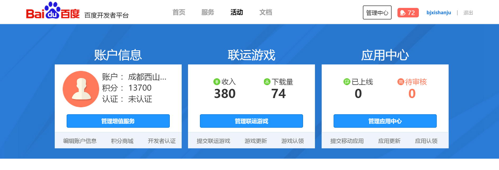
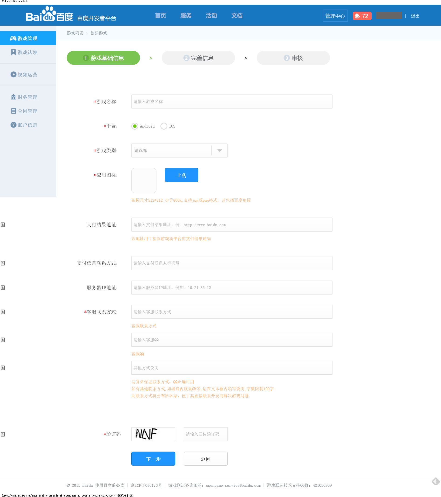
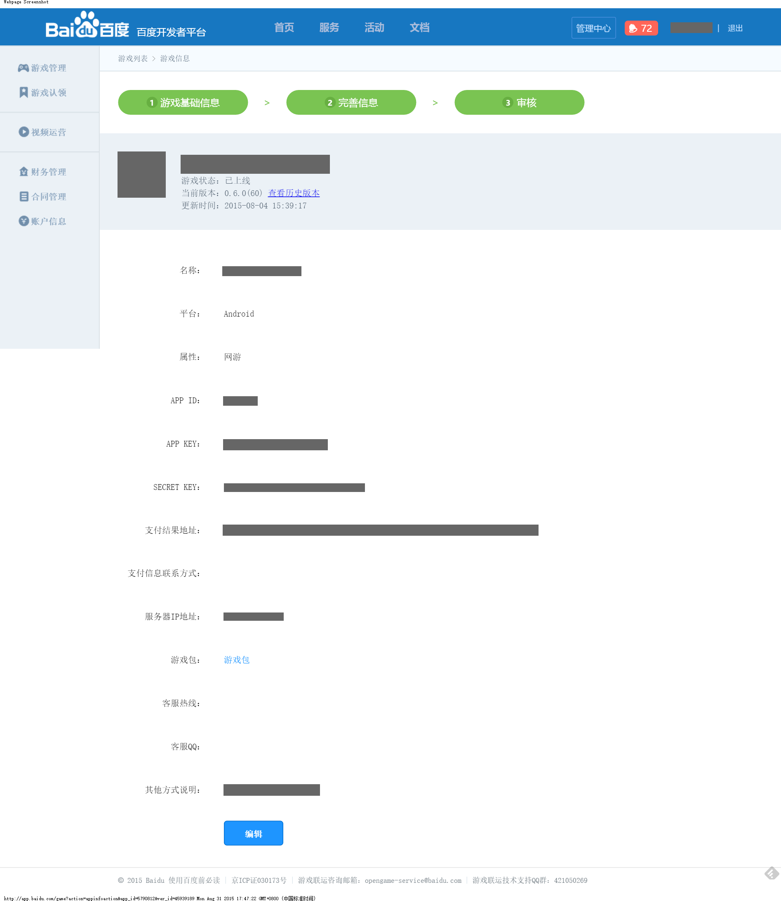

百度官方后台地址：http://app.baidu.com/
西瓜SDK所需的参数APPKEY、APP ID、 Secret Key在百度后台索取。
获取参数步骤：1. 注册开发者账号；
2. 登录百度渠道后台，点击“管理中心”，进入该页面，然后点击“管理联运游戏”；

3. 点击“创建游戏”；
4. 填写游戏相关资料，点击下一步；

5. 获取的APP ID、APP KEY、SECRET KEY如下图所示。
